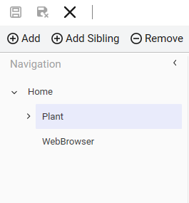
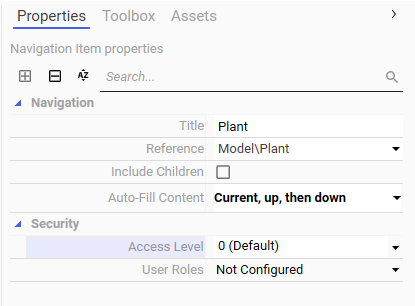
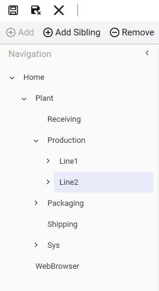
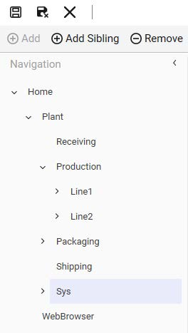
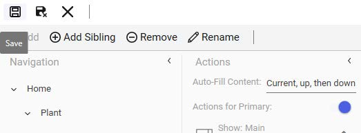
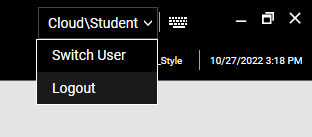
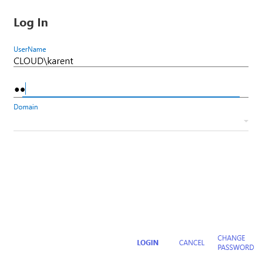
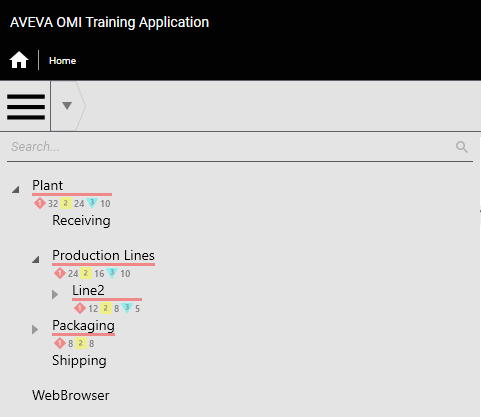

Page 446
Module 8 — Security | Pages 445-476
Lab 16 – Implementing Security in a ViewApp
Lab 16 – Implementing Security in a ViewApp
Introduction
Until now, your Galaxy has had security disabled and you have been able to perform configuration
and runtime actions without having to log into the System Platform IDE or the ViewApp.
In this lab, you will enable security in the Galaxy to use operating system user groups (OS Groups)
as the authentication mode. You will configure permissions for a default role, as well as for roles
added from domain user groups. As part of the configuration for the roles, you will assign access
levels to the roles and configure operational permissions.
In your ViewApp configuration, you will apply access levels and user roles for navigation items.
When testing your ViewApp, you will log into it as different users and see the impact on the
navigation items.
Objectives
Upon completion of this lab, you will be able to:
Configure the Access Level property for navigation items
Configure the User Roles property for navigation items
Use TitleBarApp to login and logout
Verify runtime security in a ViewApp
User Group Name
Access Level
Operational Permissions
User Name
Full Name
Application
Administrators
9999
All operational permissions
Student
Training Student
Jamess
James Smith
Maryl
Mary Lee
Plant Supervisors 1
5000
Can Verify Writes
Michaelj
Michael Jones
Karent
Karen Turner
Plant Operators 1
2000
Can Modify “Operate” attributes
Johnj
John Johnson
Lisay
Lisa Young
Plant Operators 2
2000
Can Modify “Operate” attributes
Robertw
Robert William
Nancyk
Nancy King
Enable and Configure Galaxy Security
First, you will enable Galaxy security with the OS Group based authentication mode. You will
configure permissions for the Default role, and add and configure additional roles from domain
user groups.
1.
On both the Templates tab and the Graphics tab, ensure that all objects and symbols are
checked in.

Lab 16 – Implementing Security in a ViewApp
3.
On the Authentication Mode tab, select OS Group based, and configure the Login time as
5000 ms.

4.
On the Roles tab, in the Define security roles list, select the Default role.
5.
In General permissions, uncheck all of the IDE Permissions and SMC Permissions.
You will need to scroll in the General permissions list to see all of the permissions.


Lab 16 – Implementing Security in a ViewApp
6.
In Operational permissions, expand Default and keep Alarms and the permissions beneath
it checked, but uncheck all others.
You will need to scroll in the Operational permissions list to see all of the permissions.
7.
Click Add new Role to add a role from the domain user groups.

The Select groups dialog box appears.

Lab 16 – Implementing Security in a ViewApp
8.
On the right side of the Select from the list field, click the drop-down arrow and select a
domain.

9.
In Available OS groups, press and hold the Ctrl key, and select the following groups:

Lab 16 – Implementing Security in a ViewApp
10. Click Add selected OS Group.
The selected groups appear in the Selected groups area.

11. Click OK to close the Select groups dialog box.
In the Security area, the new roles are added to the Define security roles list.

Lab 16 – Implementing Security in a ViewApp
12. In the Define security roles list, select
configure its Access level as 9999.
13. Ensure
check IDE Permissions and SMC Permissions.
This will grant all General permissions to the
14. With
check Default.
This will grant all Operational permissions to the
role.
You can expand Default and Alarms to verify.

15. In the Define security roles list, select
Access level as 2000.
16. With
Default and check Can Modify “Operate” Attributes.
This will grant the permission to modify attributes with the Operate security classification.

Lab 16 – Implementing Security in a ViewApp
17. Repeat Steps 15 - 16 to configure the

18. In the Define security roles list, select
Access Level as 5000.
19. In Operational permissions, expand Default and check Can Verify Writes.
This will grant the permission to provide an authentication signature for attributes with the
VerifiedWrite security classification.


Lab 16 – Implementing Security in a ViewApp
20. Click Save to commit the configuration changes to security.
The Sign in to TrainingGalaxy dialog box appears.
21. In the Sign in to TrainingGalaxy dialog box, enter the User name as administrator, and
then click Next.
22. In the Sign in to TrainingGalaxy dialog box, leave the Password field blank, and click Sign
in.


In the following steps, you will verify that you are logged in to the System Platform IDE as
administrator.
23. In the System Platform IDE, click the profile icon to verify that the logged-in user is
administrator.
Notice that administrator is shown as the logged-in user.
24. Click the profile icon to close the logged-in user window.


Lab 16 – Implementing Security in a ViewApp
27. On the Properties tab, from the Security \ Access Level drop-down list, check 0 (Default).
Notice that when you check 0 (Default), the other access levels in the list automatically
become checked.
Selecting all the access levels for this navigation item ensures that Plant and its navigation
hierarchy will be available only when a configured user is logged into the ViewApp.
You may need to click off the drop-down list to close it.
The Security \ Access Level property shows the selection as follows:

28. In the Navigation list, expand Plant \ Production, and select Line1.

Lab 16 – Implementing Security in a ViewApp
29. On the Properties tab, from the Security \ User Roles drop-down list, check the following
roles:
You may need to click off the drop-down list to close it.

30. In the Navigation list, select Line2.

Lab 16 – Implementing Security in a ViewApp
31. On the Properties tab, from the Security \ User Roles drop-down list, check the following
roles:

32. In the Navigation list, select Sys.


Lab 16 – Implementing Security in a ViewApp
33. On the Properties tab, from the Security \ User Roles drop-down list, check
34. Click Save to save the ViewApp template without closing the ViewApp Editor.


Test ViewApp Security in a Preview Session
Now you will test the security configured for the navigation items in the ViewApp. You will log into
the ViewApp as different users to see the impact on the navigation items.
35. In the ViewApp Editor, click Preview.
Notice that the message for preview mode appears again, because you are logged in as a
different user (administrator).
36. Check Do not show this message again, and then click OK to dismiss the message.
The ViewApp preview session opens, navigated to Home.



Lab 16 – Implementing Security in a ViewApp
37. Open the left slide-in pane and expand Plant and Production Lines.
The current logged in user belongs to the Application Administrators group, which grants
access to all navigation items, including Line1, Line2, and System.
38. Click the hamburger button to close the left slide-in pane.
39. On the title bar, click the name of the logged in user and select Logout.
In this example, Cloud\Student is the name of the logged in user.
The logged in user is logged out of the ViewApp and no user is logged in.

40. Click the hamburger button to open the left slide-in pane and review the navigation tree.
Notice that with no user logged into the ViewApp, the entire Plant hierarchy is missing from
the list and cannot be accessed.
WebBrowser is available even when no user is logged in, because you did not apply security
settings to the WebBrowser node in the navigation.
41. Click the hamburger button to close the left slide-in pane.

Lab 16 – Implementing Security in a ViewApp
42. On the title bar, click Login.
The Log In dialog box appears.
43. Log in as
The following example uses cloud for the domain.


44. Open the left slide-in pane, expand Plant and Production Lines, and review the navigation
tree.
Notice that Line1 is listed under Production Lines, but Line2 is not. Also notice that System
is missing from the navigation list. This is because the current logged in user is with the Plant
Operators 1 user group, which does not have the access to Line2 or System.
45. Click the hamburger button to close the left slide-in pane.
46. On the title bar, click the logged-in user name, and then select Switch User.


Lab 16 – Implementing Security in a ViewApp
47. In the Log In dialog box, enter


50. On the title bar, click the logged-in user name, and then select Switch User.
51. Login as
52. Open the left slide-in pane and expand Plant and Production Lines.
The current logged in user is with the Plant Operators 2 user group, which has access to
Line 2. This user does have access to Line 1 or System.


Lab 16 – Implementing Security in a ViewApp
53. In the slide-in pane, select Line2.
The current logged in user has access to the content associated with this navigation node.
54. Click the hamburger button to close the left slide-in pane.
55. Switch users and log in as

Notice that the ViewApp remains navigated to Line2.
56. Open the left slide-in pane again.
Notice that Line1 and Line2 are both listed under Production Lines, as well as System. This
is because the current logged in user is with the Application Administrators group, which has
full access to the navigation in this ViewApp.
57. Click the hamburger button to close the left slide-in pane.
58. When you are finished testing, minimize the preview session and the ViewApp Editor.
Review the lab steps above and list the main configuration actions you completed.
Consider the dependencies between steps and how skipping one might affect the outcome.